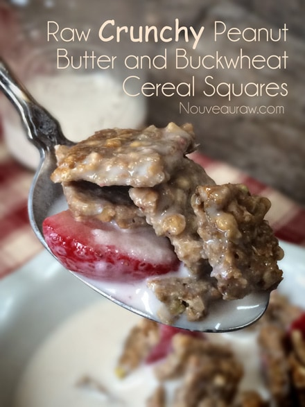
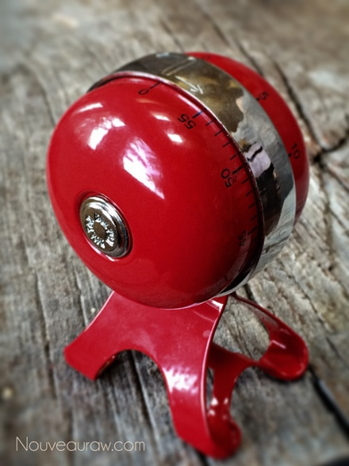
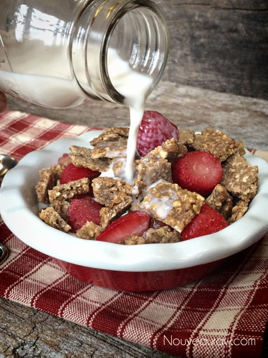
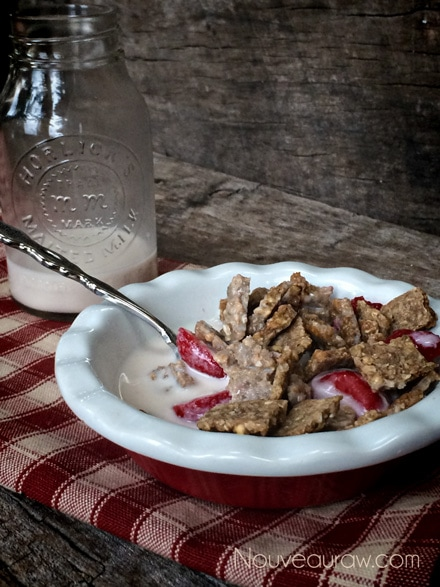
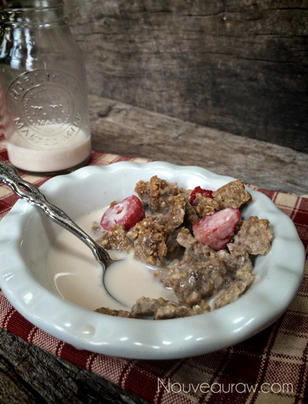
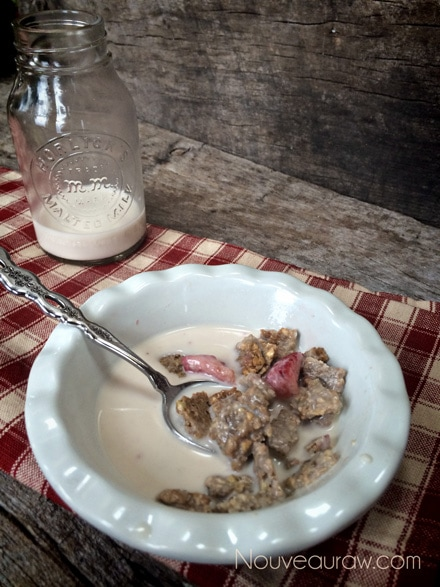
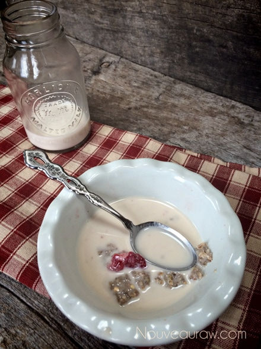
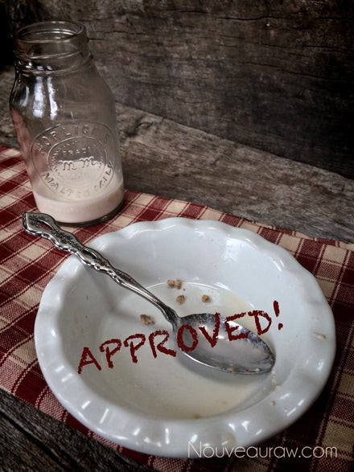

Crunchy Peanut Butter and Buckwheat Cereal Squares

~ raw, vegan, gluten-free ~
We have all heard time and time again that breakfast is the most important meal of the day. I am not going to get into the typical reasons why. Today, I was thinking about family quality time. Whether you have a large family, or it’s just you and your partner, or perhaps you live alone… breakfast time can set the pace for your day. Have you ever heard or said the phrase, ” I woke up on the wrong side of the bed today”? True enough some mornings we wake up better than others.
We all have our routines when we wake up but stop and ask yourself what the “quality” is in those routines. I could get into listing many scenarios that may take place in your household, but my bottom line is to encourage you to reflect on how you start the day. If you have kids, are you setting a positive example for them? Your habits over time influence their habits.
Be a role model that demonstrates positive attitudes for the upcoming day. :) The more you moan and groan about your boss and co-workers or the project you’re working on the more your children will learn to moan and groan about their teachers and their next math test. Life isn’t always peachy – that’s a fact – but having a positive attitude about doing things that aren’t easy is half the battle. You can give your family, your partner and yourself this lesson every morning, without the lecture, just by doing it.
Bob and I have a set routine almost every morning no matter where we are, at home or traveling. We start the day off in each other’s presence. He loves making his special espresso coffee drink, and while he is doing that, I make my iced cold-pressed coffee. Then we find a snuggle spot and curl up on the couch together. (I’m always wrapped in a blanket :) Then we toast one another and sip our drinks as we ease into the day together. It is such a peaceful way to start the day. What rituals do you have?
Yields 5 cups
- 1 1/4 cups dry raw buckwheat, soak 30+ minutes
- 1/2 cup raw coconut crystals
- 1/2 cup natural peanut butter
- 1/3 cup water
- 2 tsp vanilla extract
- 1 tsp ground Ceylon cinnamon
- 1/4 tsp Himalayan pink salt
Preparation:
- After soaking the buckwheat, rinse until the water runs clear. The buckwheat swells to about 2 1/3 cup.
- In the food processor, fitted with the “S” blade combine the coconut crystals, peanut butter, water, vanilla, cinnamon, and salt. Process until it is creamy and smooth.
- Add the buckwheat and pulse together. Don’t over process and break down the buckwheat.
- Spread the mixture on the teflex sheet that comes with the dehydrator.
- Dehydrate at 145 degrees (F) for 1 hour, then reduce to 115 degrees (F) for about 4-6 hours.
- Remove the tray and score the batter into small squares.
- You could leave it whole and just break apart after dehydration if you wanted to.
- Dehydrate about 8 hours or until dry enough to flip the batter over onto the mesh screen only and continue drying for another 9 hours or until completely dry. Allow it to cool for storing so moisture doesn’t build up in the container.
- Store in airtight containers. They will freeze wonderfully if you want to create a stockpile. :)
__________________________________________________________________________________________
FDA (Food Determining Association) conducted a test at Nouveau Raw Kitchens, The Soggy Cereal Test.
The subject: Crunchy Peanut Butter and Buckwheat Cereal Squares.
Object: to see how long this raw cereal could stand up to almond milk before getting soggy.
No animals were harmed in this test, nut a few nuts.
Results posted below.
__________________________________________________________________________________________

Step 1 ~Add Raw Almond Nut Milk

Step 2 ~ 10 minutes into the test. Result ~ Still crispy.

Step 3 ~ 20 minutes into the test. Result ~ Still crispy.

Step 4 ~ 30 minutes into the test.
Results ~ Still crispy but starting to soften around the edges.

Step 5 ~ 35 minutes into the test. Results ~ Still holding strong but it is
in the beginning stages of buckling under the pressure of the milk.

Step 6 ~ 36 minutes… running out of patience. lol

This concludes our test. Result: belly is full, I am happy, and it was so good
that I had to lift the bowl to my lips to slurp down the peanut buttery milk!